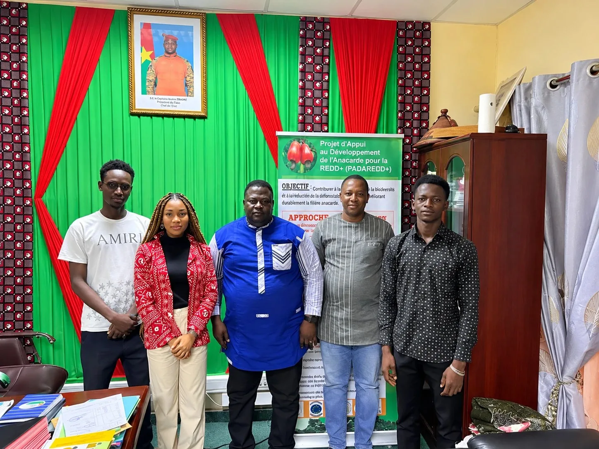
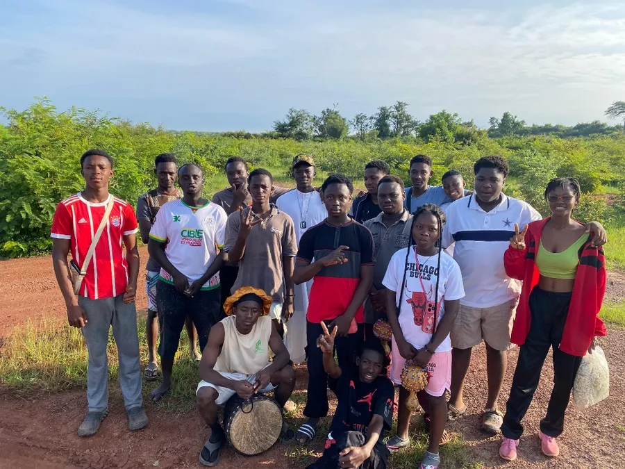
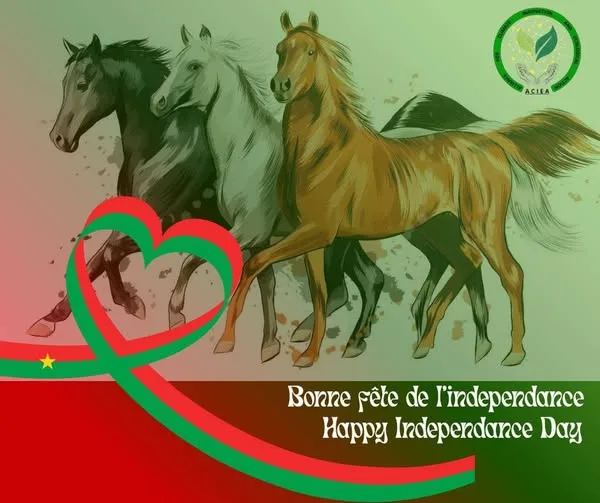

Partnership
ACIEA and GWP West Africa formalise a strategic partnership
A Memorandum of Understanding signed on 3 July 2026 in Ouagadougou on sustainable water management, climate resilience and digital innovation, centred on the SAAGDO solution.
On 8 July 2025, an ACIEA delegation was received by the Chief of Staff of the Ministry to present the Alliance, its vision and its actions.

On 8 July 2025, an ACIEA delegation was received by the Chief of Staff of the Ministry of Environment, Water and Sanitation (MEEA).
The meeting aimed to present ACIEA, its vision, objectives and environmental actions. The Chief of Staff praised the commitment of young Burkinabè within the Alliance, highlighting the relevance of its initiatives and their civic and technological grounding.
A promising exchange for future synergies towards a Burkina Faso more resilient to climate challenges.
A Memorandum of Understanding signed on 3 July 2026 in Ouagadougou on sustainable water management, climate resilience and digital innovation, centred on the SAAGDO solution.

From 2 to 8 September 2025, the municipality of Komsilga hosted the Eco-Citizen Holiday Camp: workshops on soilless farming, recycling used tyres and eco-citizenship, alongside tree-planting.

ACIEA pays tribute to the people of Burkina Faso for 65 years of resilience, dignity and commitment, and calls for eco-citizenship to flourish.